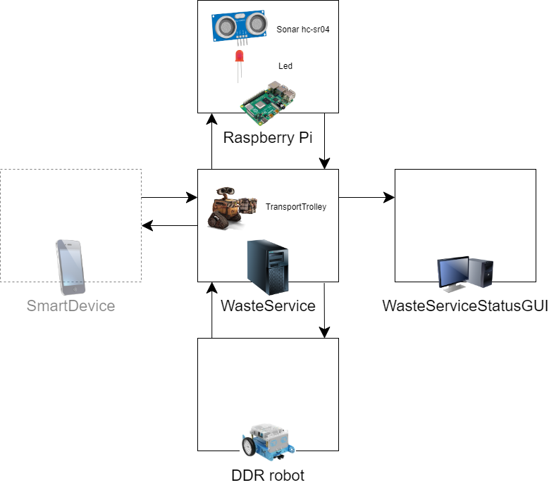

Requirement Analysis
The purpose of the final product is to manage a waste-disposal service.Customer Clarifications
The interaction with the customer pointed out the following clarifications:- Waste truck driver is a human operator external to the system.
- The messages sent by the truck driver through a smart device are however part of the system
- The waste truck should be dismissed as soon as possible.
- WasteService might receive a new request while it's still processing the deposit action of the previous one.
- Once full, containers aren't emptied until the application is restarted.
- The trolley position could be represented as qualitative indications, for example "at indoor", "at glassbox", etc.
- The robot is not required to move optimally, but it shouldn't wander around the room too much either.
- The collection time of the material from the truck is always limited and predictable, while the time required for storage could be quite long (also due to the not-optimal movement).
- Sonar and led are NOT on the trolley, but on a separate Raspberry Pi.
- The sonar detects objects that we place in front of it.
- The trolley stop, as a consequence of an "alarm" from the Sonar, should occur "as soon as possible".
- The DDR provided by the customer has an on-board sonar, but this is used to detect obstacles when the robot is moving (e.g. the room walls).
Dictionary
Nouns
| Term | Definition |
|---|---|
| WasteService | Distributed software system to manage and coordinate the separate collection of waste. This is the final product as a whole, which has to be delivered to the customer. |
| Service area | Rectangular flat surface, free from internal obstacles. |
| INDOOR | Location situated on the perimeter of the service area, where the waste enters from. |
| PlasticBox | Container which contains waste made of plastic, and has a maximum capacity of MAXPB. |
| MAXPB | The maximum capacity of PlasticBox. |
| GlassBox | Container which contains waste made of glass, and has a maximum capacity of MAXGB. |
| MAXGB | The maximum capacity of GlassBox. |
| DDR robot | Differential Drive Robot (DDR), provided by the customer, which is confined inside the service area. It's the actual physical robot, and can be controlled through a software provided by the customer: BasicRobot |
| Transport trolley¹ |
Square-shaped virtual robot, with side length of RD, which is initially situated
in its HOME location and performs a deposit action. It can move forward, backward, stop and rotate by 90°. The transport trolley is a command actuator: it can use the DDR robot to perform actions in a real environment. |
| RD | Length of each side of the transport trolley. |
| HOME | Starting position of the transport trolley, inside the service area. |
| Deposit action |
Operation that describes the deposit of the WasteLoad in a container and consists in 3 phases:
|
| Waste truck | A generic entity external to the system, which deposits TruckLoad kg of waste at the INDOOR location. |
| Truck driver | A person who drives the waste truck, which is not part of the system. |
| TruckLoad | The amount (kg) of waste that had been deposited by the waste truck at INDOOR. |
| WasteLoad | The amount (kg) of waste the transport trolley has to pick up from the waste truck at INDOOR. |
| Service-manager | An human supervisor which monitors the state of the service area through a WasteServiceStatusGUI. |
| State of the service area |
Information about the WasteService at a certain time, which include:
|
| WasteServiceStatusGUI | Graphical User Interface of a specific software (which will run on a smart device), that shows the state of the service area and can be monitored by a supervisor. |
| Sonar | Concrete component, provided by the customer along with the software to use it: . It can detect the presence of obstacle within a certain scope, and tell its distance. |
| Alarm device |
Abstract component which uses the Sonar (through the software provided by the customer), and will be installed on a RaspberryPi.
When it measures a distance which is less than a prefixed value DLIMT, the transport trolley must be stopped. It will be resumed when the Sonar detects again a distance higher than DLIMT. |
| Led | Concrete component, provided by the customer along with the software necessary to use it: It can emit light. |
| Warning device |
Abstract component which uses the Led (through the software provided by the customer), and will be installed on a RaspberryPi.
It will give information about the current state of the trolley:
|
| RaspberryPi | Single-board computer. Refers to the model Pi 4 B. |
| DLIMT | Prefixed distance used to trigger the alarm system that stops the transport trolley. |
Notes
- DDR robot and transport trolley are not the same.
Verbs
| Term | Subject | Object | Description |
|---|---|---|---|
| To send a store request | Waste truck/ truck driver | WasteService | The truck driver approaches the INDOOR of the service area and asks the WasteService (through a smart device) if he can deposit TruckLoad kg of a certain type of material. |
| To send a store answer | WasteService | Waste truck/ truck driver |
Action that occurs after the WasteService had received a store request. The WasteService sends a reply to the waste truck, that might be:
|
| To perform a deposit action | Transport trolley | WasteLoad |
That task consists in the completion of 3 actions, by the transport trolley:
|
| To pick up the waste | Transport trolley | WasteLoad | The transport trolley collects the WasteLoad dumped by the waste truck at INDOOR. |
| To transfer the waste | Transport trolley | WasteLoad | The transport trolley carries the WasteLoad from the INDOOR to the container used for the collection of waste of that type (specified in the store request). |
| To deposit the WasteLoad | Transport trolley | WasteLoad | The transport trolley dumps the WasteLoad into the container, which must have enough space to fit the waste. |
| To be ON | Led | - | The Led is turned on and emits light. |
| To be OFF | Led | - | The Led is turned on and does not emit light. |
| To blink | Led | - | The Led is switching on/off in a rapid sequence. |
| To measure the distance | Sonar | Obstacle | The sonar is detecting the presence of an obstacle (e.g. through the emission of ultrasound waves). |
| To start the activity | WasteService | Transport trolley | To start the WasteService software. When the execution begins, the robot is positioned in its HOME location. |
| To be ready | Transport trolley | - | The Transport trolley is prepared to handle the next deposit action. |
| To be moving | Transport trolley | - | The Transport trolley is moving inside the service area. It's considered moving also when it's settled doing an action (e.g. picking up the waste at INDOOR). |
| To terminate the deposit action | Transport trolley | - | The transport trolley has completed the deposit action and is ready to handle the next one, if there are any, otherwise it will return to its HOME. |
| To stop the activity | Sonar | Transport trolley | The transport trolley, while moving forward or backward, can be stopped due to the alarm device. While the transport trolley is stopped, it cannot move until a resume message occurs. |
| To resume the activity | Sonar | Transport trolley | The transport trolley resumes the activity and continues performing deposit actions. |
General Overview
Software Provided by the Customer
- BasicRobot - software component which executes movement commands of a DDR-robot, regardless of the technology with which the robot is implemented (virtual or real);
- RaspberryPi utility software
- SmartDevice - a software already implemented and usable which allows the truck driver to send store requests.
System Abstract
From the analysis of text provided by the customer, we are able to draft one main evidence: the software system is going to comprehend at least 4 computational nodes:- WasteService node
- Smart device (waste truck) node
- Raspberry Pi (alarm-warning) node
- Monitoring node
Computational Nodes


Show the legend
Given the architecture above, we can group the project requirements into
3 macro components, ordered by priority:
-
WasteService component (requirements 1 & 2): includes the service area, the transport trolley, and the software that manages those and the comunication correlated to them. This is the core-business of the system.
High priority : the system cannot provide the service without it. -
RaspberryPi component (requirement 4), includes all the hardware that will be attached to the Raspberry Pi device, and the software that handles the alarm and warning interactions.
Medium priority : it involves the security of the service. -
Monitoring component (requirement 3): comprehends the software used by the supervisor, which displays up-to-date information about the current state of the service and its components.
Low priority : it can be seen as a "secondary, fancier and remote output" (in addition to the textual output), and depends on the other 2 components.
Service Area
Given the description and the image provided by the customer, we've modeled the service area as a rectangle free from obstacles and surrounded by 4 walls, within which there are 4 relevant areas:- HOME, an area of the same size as the transport trolley, in which it will be placed each time the WasteService software is run;
- INDOOR, a zone along the perimeter, where the transport trolley will have to go every time the WasteService receives a StoreRequest, and from which it will pick up the waste;
- GLASSBOX and PLASTICBOX, an area along the perimeter, where the transport trolley will have to deposit the respective waste.
Requirements Formalization
Entities
| Entity | Activity | Type | Description/Behaviour |
|---|---|---|---|
| wasteTruck | Reactive | (Test) Actor | Entity that approaches the INDOOR of the service area to dump some wasteLoad. It's represented as an actor for testing/simulation purposes: it sends dummy requests once in a while. |
| wasteService | Proactive & Reactive | Actor | Handles the wasteTruck requests and manages the transport trolley actions. It also sends updates to the wasteServiceStatusGUI and to the alarmDevice. |
| Reactive | Actor | Entity that receives commands from the transportTrolley and drives the DDR robot. | |
| transportTrolley | Proactive & Reactive | Actor | Main entity of the wasteService system, which moves within the service area and performs the deposit actions. |
| wasteService- StatusGUI |
Reactive | Actor | Entity that receives data from the wasteService and updates a GUI, used to monitor the status of the service area. We model it as an actor beacuse it processes messages one by one and updates the GUI accordingly. |
| alarmDevice | Proactive | Actor | Entity, which is part of a smart device, that sends a message to the wasteService when it detects the presence of an obstacle. We formalize the alarmDevice as an actor because it has its own autonomous flow of control, and sends messages to wasteService. |
| warningDevice | Reactive | Actor | Entity, which is part of a smart device, used to monitor the state of the trolley, We model it as an actor beacuse it processes messages one by one and updates the Led state accordingly. |
Notes
- Proactive: entity which creates or controls a situation rather than just responding passively after it has happened.
- Reactive: entity which acts in response to a situation rather than creating or controlling it.
Data
We had chosen| Data | Type | Description |
|---|---|---|
| truckLoad | Floating point variable |
Indicates the weight of the waste that the truck wants to dump.
Since the weight is expressed in kg, we have to use float value.
var truckLoad : Float
|
| wasteLoad | Floating point variable |
Indicates the weight of waste that the transport trolley is going to deposit.
var wasteLoad : Float
|
| WasteType | Enumerative |
Indicates the type of waste to deposit.
enum class WasteType { PLASTIC, GLASS }
|
| PICKUP_TIME | Integer constant |
Time in seconds, known in advance, it takes the transport trolley to pick up the waste.
const val PICKUP_TIME : Int
|
| MAXPB | Floating point constant |
Maximum waste capacity that the PlasticBox can store.
const val MAXPB : Float
|
| MAXGB | Floating point constant |
Maximum waste capacity that the GlassBox can store.
const val MAXGB : Float
|
| RD | Integer constant |
Length of the transport trolley.
const val RD : Int
|
| DLIMT | Floating point constant |
Limit distance beyond which the alarm is activated.
const val DLIMT : Float
|
| TrolleyState | Enumerative |
All the possible states of the transport trolley.
enum class TTState { IDLE, MOVING, PICKINGUP, STORING, STOPPED }
|
| LedState | Enumerative |
All the possible states of the Led.
enum class LedState { OFF, ON, BLINKING }
|
Messages
| Message | Type | Sender | Receiver | Description |
|---|---|---|---|---|
| storeRequest | Request | truck driver (smart device) |
WasteService | Ask if TruckLoad kg of waste can be dumped to the waste service. |
| loadAccepted | Reply | WasteService | truck driver (smart device) |
There is enough space for the waste to be deposited. |
| loadRejected | Reply | WasteService | truck driver (smart device) |
There is NOT enough space for the waste to be deposited. |
| doDeposit | Dispatch | WasteService | Transport Trolley | Start a deposit action. |
| updateGui | Dispatch | WasteService or Transport Trolley |
WasteService- StatusGUI |
Update the information displayed on the GUI of the monitor node. |
| updateLed | Dispatch | Transport Trolley | Warning Device | Update the Led state. |
| distance | Dispatch | Alarm Device | WasteService | Tell the distance of eventually detected obstacles. |
| stop | Dispatch | WasteService | Transport Trolley | Stop the robot and prevent it from doing any activity. |
| resume | Dispatch | WasteService | Transport Trolley | Resume the robot activity. |
Models
Why QAK
Problem: we need to fill the abstraction gap related to the concept of service.Solution:
Reasons:
- It was entirely implemented by our software house, which makes it easier to get information and support from the actual creator of the language.
- It provides a way to represent concepts related to services, such as request, response, dispatch, etc., while other general-purpose languages would need external libraries (e.g. Java would need some kind of JAR to implement Actors), frameworks or resources to do the same.
- It allows you to create executable models directly from the language, which capture the salient aspects of the requirements or problems.
- Our software house already has some project and components we could exploit and use.
QAK documentation
Logical Architecture
Model: system_overview.qakTest Plans
Interaction: SmartDevice → WasteService
Simulation that involves the issuing of multiple storeRequest from the SmartDevice. The test aims to check how the system should behave when receiving different types of requests:- Store request of Plastic, if there is enough space (loadaccepted);
- Store request of Plastic, if there is not enough space (loadrejected);
- Store request of Glass, if there is enough space (loadaccepted);
- Store request of Glass, if there is not enough space (loadrejected);
File: TestInteractions.java (Executable)
Results: Gradle test report (Generated automatically)